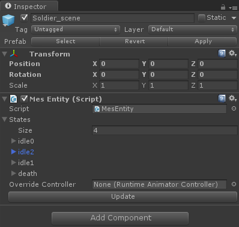

Mecanim Event System позволяет подписываться на событие, оповещающее о смене состояния анимационного контроллера. Реализация основана на парсинге .controller файла и генерации списка состояний со всей необходимой информацией для отслеживания их смены.
Основные модули:
1. Назначаем MesEntity на GameObject. Animator при этом должен находиться либо на этом же GameObject, либо на объекте ниже по иерархии. Если вы рассчитываете инстанциировать объект с Animator'ом в рантайме - необходимо назначить в переменную OverrideController ссылку на анимационный контроллер.
2. Нажимаем кнопку Update компонента
3. В необходимых скриптах подписываемся на OnStateChanged(string oldState, string newState)
4. ?????
5. PROFIT!

1. Лучше нажимать Update, предварительно вытащив GameObject на сцену, так как в Project может не сработать GetComponentInChildren
2. Если вы удаляете стэйт из контроллера - он не удаляется (sic!). Поэтому парсер будет все равно его считывать. В принципе это абсолютно не критично.